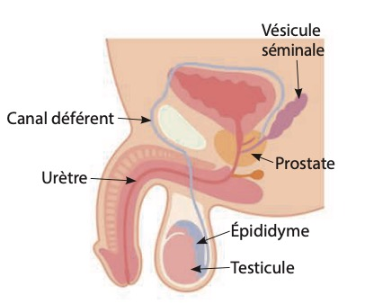
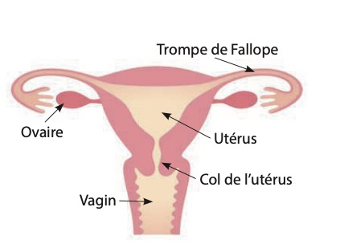
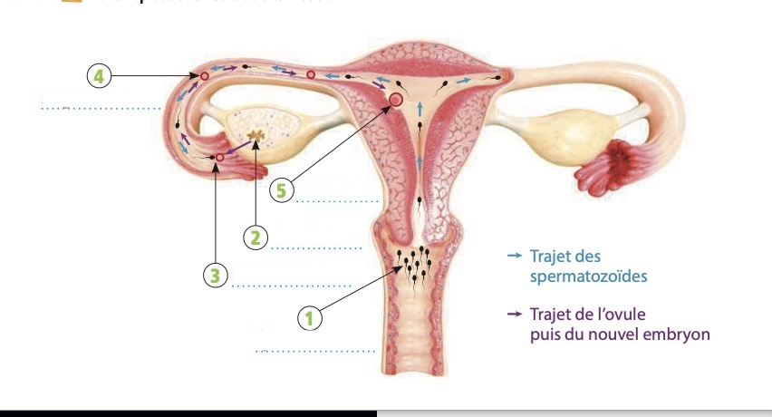
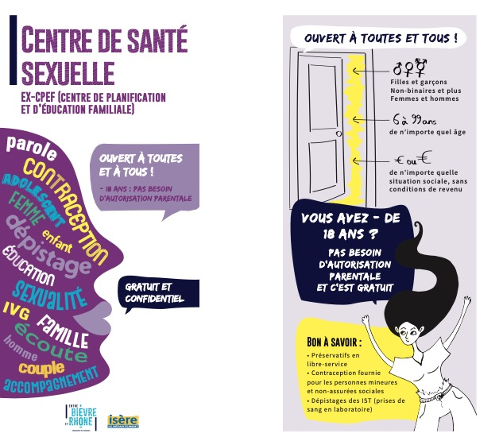

Objectif : Être capable de choisir une contraception préventive adaptée à une situation.
C1 – C2 – C3 – C4 – C5 – C6
Séance 1
Reproduction sexuée : des gamètes à la nidation
🎯 Objectif : Être capable de décrire les étapes de la reproduction sexuée jusqu'à la nidation.
Compétences : C2 – C3 – C1 – C3
📖 Situation
Nora et Yanis sont en couple. Ils veulent avoir des rapports sexuels sans risquer une grossesse. Ils cherchent une solution fiable, mais ils ne savent pas quoi choisir. Nora ne veut pas se tromper ou oublier quelque chose. Yanis, lui, pense que le préservatif suffit, mais Nora voudrait aussi une solution qui protège sur la durée. Ils hésitent et ne savent pas à qui demander conseil.
C2Question 1
Identifier les informations de la situation en répondant au QQOQCP.
Qui ?
Quoi ?
Où ?
Quand ?
Comment ?
Pourquoi ?
Relis bien la situation. Chaque question du QQOQCP te demande de trouver une information précise dans le texte. Par exemple : Qui = les personnes citées dans le texte. Où = est-ce que le lieu est mentionné ?
✅ Correction du QQOQCP
Qui ? Nora et Yanis
Quoi ? Choisir une contraception pour éviter une grossesse
Où ? Non précisé dans la situation
Quand ? Avant leurs prochains rapports sexuels
Comment ? Ils cherchent un moyen de contraception adapté à leur situation
Pourquoi ? Éviter une grossesse non désirée et choisir une solution fiable
💬 Le QQOQCP est un outil qui permet d'analyser rapidement une situation pour bien comprendre de quoi il s'agit avant de chercher des solutions.
📄 Document A – La production de spermatozoïdes

🖼 Schéma de l'appareil génital masculin Image : A5/images/doc-a-appareil-masculin.jpg
Chez l'homme, la production de spermatozoïdes (gamètes) est continue de la puberté jusqu'à la fin de la vie.
La testostérone est l'hormone produite par les testicules qui va stimuler la production des spermatozoïdes.
Au cours de l'éjaculation, les spermatozoïdes passent dans les canaux déférents, puis l'urètre, pour former le sperme qui sort du pénis.
Les spermatozoïdes dans l'organisme féminin ont une durée de vie de 2 à 5 jours.
📄 Document B – La production d'ovules

🖼 Schéma de l'appareil génital féminin Image : A5/images/doc-b-appareil-feminin.jpg
À la puberté, la femme arrive en âge de procréer. Elle produit alors un ovule (gamète) par mois, émis alternativement par chaque ovaire.
Vers la moitié du cycle menstruel, c'est l'ovulation : un ovule est expulsé des ovaires, dans l'une des trompes.
Après son expulsion de l'ovaire, la durée de vie de l'ovule est d'environ 12 à 24 heures.
La progestérone et les œstrogènes sont les deux hormones produites par les ovaires qui vont agir sur l'utérus. Celui-ci sera prêt à accueillir un embryon s'il y a eu fécondation.
C3Question 2
À l'aide des documents A et B, indiquer par une croix les affirmations justes.
Lis chaque affirmation et vérifie dans les documents si elle est vraie ou fausse. Fais attention aux mots absolus comme « infini » ou « ne … qu'à » — ils doivent correspondre exactement à ce que dit le document.
✅ Correction – Affirmations justes
Les affirmations vraies sont : 2, 3, 6, 8, 9.
✗ N°1 : Faux — la production de spermatozoïdes est continue de la puberté jusqu'à la fin de la vie, pas seulement à la puberté.
✓ N°2 : Vrai — la testostérone stimule bien la production de spermatozoïdes.
✓ N°3 : Vrai — l'ovule est produit dans les ovaires.
✗ N°4 : Faux — la femme produit un ovule par mois, le stock n'est pas infini.
✗ N°5 : Faux — l'ovule vit 12–24h, le spermatozoïde 2–5 jours → c'est l'inverse !
✓ N°6 : Vrai — gamète = cellule reproductrice.
✗ N°7 : Faux — la nidation c'est l'implantation dans l'utérus ; la rencontre s'appelle la fécondation.
✓ N°8 : Vrai — l'utérus se prépare à chaque cycle.
✓ N°9 : Vrai — l'embryon résulte de la fécondation.
✗ N°10 : Faux — l'ovulation a lieu vers la moitié du cycle, pas au début.
C1Question 3
Relever la bonne réponse d'après les documents A et B, puis l'entourer.
1. Les spermatozoïdes sont fabriqués dans :
2. Les ovules sont fabriqués dans :
3. La fécondation, c'est :
4. La nidation, c'est :
5. Une hormone, c'est :
Retrouve chaque terme dans les documents A et B et lis attentivement la définition donnée. Par exemple, cherche « nidation » et « fécondation » dans le texte pour ne pas les confondre.
✅ Correction QCM
Les testicules — les spermatozoïdes sont produits dans les testicules (doc. A).
Les ovaires — un ovule est produit dans les ovaires chaque mois (doc. B).
La rencontre ovule-spermatozoïde — c'est la définition exacte de la fécondation.
La fixation dans l'utérus — la nidation = implantation de l'embryon dans la paroi utérine.
Un message du corps — une hormone est un messager chimique produit par une glande (ex. testicule → testostérone).
📄 Document C – De la reproduction sexuée à la nidation

🖼 Schéma annoté – étapes 1 à 5 de la reproduction sexuée à la nidation Image : A5/images/doc-c-nidation.jpg
C3Question 4
Dans le document C, reporter chaque étape au bon numéro (de 1 à 5).
1
2
3
4
5
Pense à la logique biologique : avant que les spermatozoïdes puissent rencontrer l'ovule, que doit-il se passer d'abord ? Dans quel ordre se passent les événements dans le corps ? L'éjaculation vient avant la rencontre, et la nidation arrive en dernier.
✅ Correction – Ordre des étapes
Éjaculation — les spermatozoïdes sont déposés dans le vagin
Ovulation — l'ovaire libère un ovule dans la trompe
Fécondation — un spermatozoïde s'unit à l'ovule dans la trompe → cellule-œuf
Migration — la cellule-œuf se déplace vers l'utérus
Nidation — l'embryon s'implante dans la paroi utérine
💬 Retiens bien la différence : fécondation = rencontre → nidation = implantation. Ce sont deux étapes distinctes !
Séance 2
Contraception préventive : choisir un moyen adapté
🎯 Objectif : Être capable de choisir une contraception préventive adaptée à une situation.
Compétences : C4 – C2 – C4 – C4 – C3 – C4
📄 Document D – La contraception préventive
Méthode
Sexe
Mode d'action
Posé par professionnel
À manipuler pendant le rapport
Contient des hormones
Fréquence
Préservatif masculin
♂
Empêche la fécondation
Non
Oui
Non
Chaque rapport
Préservatif féminin
♀
Empêche la fécondation
Non
Oui
Non
Chaque rapport
Patch
♀
Empêche la fécondation
Non
Non
Oui
1 fois par mois
Stérilet au cuivre
♀
Empêche la nidation
Oui
Non
Non
1 fois tous les 5 ans
Stérilet à la progestérone
♀
Empêche la fécondation
Oui
Non
Oui
1 fois tous les 5 ans
Pilule
♀
Empêche la fécondation
Non
Non
Oui
Tous les jours (voie orale)
Implant contraceptif
♀
Empêche la fécondation
Oui
Non
Oui
1 fois tous les 3 ans
C4Question 5
À l'aide du document D, proposer pour chaque situation le contraceptif approprié.
Ma copine ne peut pas utiliser de contraceptif hormonal ni de stérilet.
Je ne veux pas de préservatif, mais un contraceptif pour lequel je suis tranquille 5 ans.
J'accepte un contraceptif hormonal qui se prend par voie orale.
Je veux être autonome et pouvoir mettre le contraceptif avant le rapport.
Lis bien le tableau document D et repère les colonnes importantes : "Contient des hormones" (non = pas d'hormones), "Posé par professionnel" (oui = ça dure longtemps), "À manipuler pendant le rapport" (non = pose avant). Chaque situation te donne des indices précis.
✅ Correction – Situations contraception
Préservatif masculin — ni hormones, ni stérilet → seul le préservatif (sans hormones, sans être posé par un professionnel) convient.
Stérilet au cuivre — efficace 5 ans, posé par un professionnel, sans manipulation à chaque rapport.
Pilule — contraceptif hormonal pris par voie orale tous les jours.
Préservatif féminin — peut être posé par la femme AVANT le rapport sexuel, ce qui lui donne une autonomie totale.
C2Question 6
Associer chaque moyen de contraception à son action d'après le document D.
A. Préservatif B. Pilule C. DIU (stérilet au cuivre)
N°
Action
Réponse (A, B ou C)
1
Empêcher les spermatozoïdes d'entrer dans l'utérus
2
Empêcher l'ovulation
3
Empêcher la nidation
Regarde la colonne "Mode d'action" dans le document D. Le préservatif est une barrière physique (il bloque). La pilule contient des hormones (elle bloque l'ovulation). Le stérilet au cuivre agit sur la nidation.
✅ Correction – Association
A – Préservatif : barrière physique qui empêche les spermatozoïdes de pénétrer dans l'utérus.
B – Pilule : contraceptif hormonal qui bloque l'ovulation (pas d'ovule = pas de fécondation possible).
C – DIU (stérilet au cuivre) : il empêche la nidation (l'implantation de l'embryon dans l'utérus).
📄 Document E – La contraception d'urgence / L'IVG
Contraception d'urgence
Un préservatif qui se déchire ou une pilule oubliée ? Après un rapport sexuel mal ou non protégé, il existe la contraception d'urgence. C'est une méthode de « rattrapage » face à une situation à risque de grossesse.
La contraception d'urgence hormonale se présente sous la forme d'un comprimé unique. Il faut le prendre le plus tôt possible après le rapport à risque. Plus la contraception d'urgence est prise rapidement, plus elle est efficace.
Source : www.questionsexualite.fr
IVG : Interruption volontaire de grossesse
En France, toute personne enceinte, majeure comme mineure, bénéficie du droit à l'avortement. La loi permet d'avoir recours à l'IVG jusqu'à 14 semaines de grossesse, soit 16 semaines depuis le début des dernières règles.
C4Question 7
À l'aide du document E, indiquer la conduite à tenir en cas d'oubli de la pilule avec risque de grossesse.
Cherche dans le document E la partie "Contraception d'urgence". Que dit-on de faire en cas de rapport à risque ?
✅ Réponse attendue
En cas d'oubli de la pilule, il faut prendre une contraception d'urgence (pilule du lendemain) le plus tôt possible après le rapport à risque, afin d'éviter une grossesse non désirée.
💬 La contraception d'urgence est disponible sans ordonnance en pharmacie. Elle est gratuite et confidentielle pour les mineurs.
C1Question 8
Relever dans le document E la forme de la contraception d'urgence.
Cherche dans la partie « Contraception d'urgence » du document E. Une phrase décrit précisément sous quelle forme se présente ce médicament.
✅ Réponse
La contraception d'urgence hormonale se présente sous la forme d'un comprimé unique.
💬 C'est une réponse de relevé : elle est directement écrite dans le document, il suffit de la repérer et de la recopier.
📄 Centre de santé sexuelle (ex-CPEF)

🖼 Affiche du Centre de santé sexuelle (ex-CPEF) Image : A5/images/doc-css-centre-sante.jpg
C3Question 9
Indiquer les missions d'un centre de santé sexuelle.
Regarde l'affiche : quelles sont les 4 grandes missions d'un tel centre ? (accueillir, informer, …). Qui peut y aller ? Est-ce payant ?
✅ Réponse attendue
Un centre de santé sexuelle est un lieu d'accueil, d'écoute, d'information et de consultation médicale pour tout ce qui concerne la sexualité, la contraception et la grossesse.
Ouvert à toutes et tous, sans condition de revenus ni d'âge
Gratuit et confidentiel, y compris pour les mineurs (pas besoin d'autorisation parentale)
Propose : préservatifs, contraception, dépistage IST, accompagnement IVG
C4Question 10
Proposer à Nora et Yanis une solution de contraception préventive adaptée, puis justifier avec 2 informations issues du tableau du cours.
Relis la situation : Nora veut une protection sur la durée (pas dépendante de l'oubli), Yanis pense au préservatif. Une bonne solution combine les deux préoccupations. Cherche dans le tableau une méthode féminine longue durée sans hormones, et une méthode masculine simple.
✅ Exemple de réponse
Solution : Préservatif masculin + DIU (stérilet au cuivre)
Justification 1 : Le préservatif masculin est un moyen de contraception utilisé à chaque rapport sexuel. Il est simple d'utilisation et ne nécessite pas de professionnel de santé.
Justification 2 : Le DIU (stérilet au cuivre) est un moyen féminin de longue durée (5 ans), posé par un professionnel. Il ne contient pas d'hormones et ne dépend pas d'un oubli quotidien, ce qui répond au besoin de Nora.
💬 D'autres réponses sont acceptables, du moment qu'elles sont justifiées avec les données du tableau et cohérentes avec la situation de Nora et Yanis.
🎯 Auto-évaluation – Teste tes connaissances
Réponds à chaque question, puis clique sur "Calculer mon score" pour voir tes résultats.
1. Les spermatozoïdes sont produits dans les testicules.
2. L'ovule est produit dans l'utérus.
3. La durée de vie d'un ovule est plus longue que celle d'un spermatozoïde.
4. La nidation a lieu dans la trompe de Fallope.
5. La pilule du lendemain doit être prise le plus tôt possible.
6. L'hormone produite par les testicules s'appelle :
7. Le stérilet au cuivre empêche :
8. La rencontre entre un ovule et un spermatozoïde s'appelle :
9. Où l'embryon s'implante-t-il lors de la nidation ?
10. Quel professionnel de santé pose le stérilet ?
Tu y trouveras des quiz interactifs, des fiches et des exercices pour te préparer.
📌 Je retiens !
L'appareil génital féminin libère un ovule par mois à partir de la puberté. Les ovaires produisent deux hormones : la progestérone et les œstrogènes.
L'appareil génital masculin produit des spermatozoïdes. Les testicules produisent une hormone : la testostérone.
Lors de la fécondation, un spermatozoïde s'unit à un ovule dans la trompe utérine. La cellule-œuf migre et s'implante dans l'utérus : c'est la nidation.
La contraception préventive féminine ou masculine permet d'éviter une grossesse non désirée (préservatif, pilule, stérilet…).
Après un rapport non protégé, la contraception d'urgence peut être prise dans un délai de 3 à 5 jours — le plus tôt est le mieux.
L'IVG est possible jusqu'à 14 semaines de grossesse, sous certaines conditions fixées par la loi.
Les centres de santé sexuelle accueillent gratuitement et confidentiellement toutes les personnes, quel que soit leur âge.